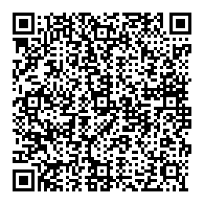
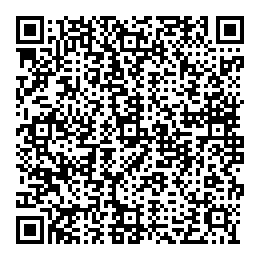

Cronómetro
0.0
segundos

Ver el ejercicio en un smartphone o en un dispositivo tactil y achique la pantalla para visualizar el efecto "Tap / Swipe"

Ver el ejercicio en un smartphone o en un dispositivo tactil y achique la pantalla para visualizar el efecto "Tap / Swipe"
